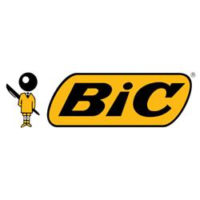
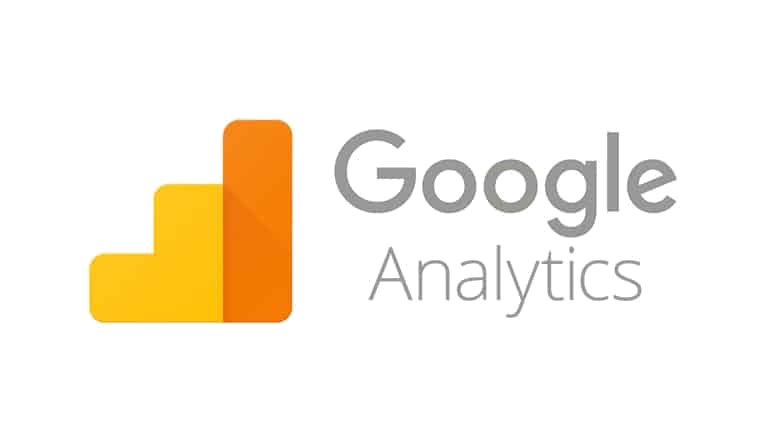
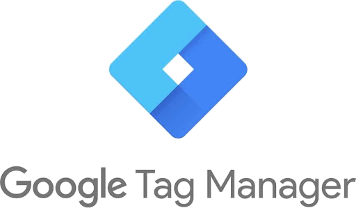
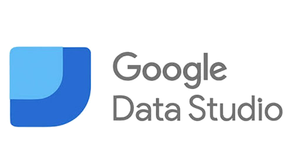
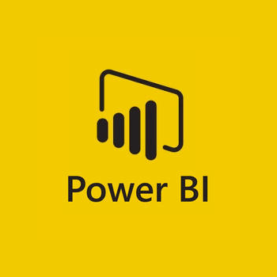
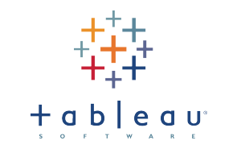
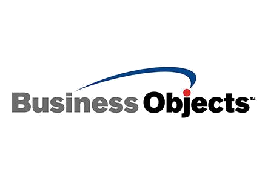
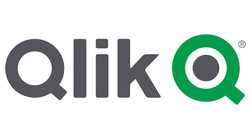

Nous vous accompagnons !
Dans l’analyse de votre performance digitale
-
Audit Analytics
Polygon audite le tracking de votre site ainsi que toute autre source de données. L’objectif : s’assurer que vos données sont adaptées à vos enjeux business et métiers.
L’audit permet d’identifier les problèmes de qualité, les fonctionnalités non utilisées, ainsi que les opportunités à saisir. -
Plan de marquage
Après un audit complet, Polygon vous délivre ses préconisations, adaptées à vos besoins Analytics.
Le plan de marquage constitue le socle de tout outil Analytics ou décisionnel.
S’il est bien construit, il pourra également alimenter d’autres outils (remarketing, partenaires, etc.). -
Accompagnement
Polygon vous accompagne dans votre stratégie Analytics, jusqu’à la construction de dashboards et au pilotage des parties prenantes.
L’objectif : mieux piloter votre activité et adopter une stratégie orientée Data Driven.
La montée en PERFORMANCE de votre équipe
-
Initiation à la webanalyse
WHY ?
Qu’est-ce que la webanalyse ? À quoi peut-elle me servir ? Quels sont les outils disponibles ? Et comment les appliquer à mon site ?
HOW ?
Polygon vous propose une initiation en deux séances, personnalisée en fonction de votre site et de vos problématiques. -
Pratique de la webanalyse
WHY ?
Comment collecter des données ? Comment recetter un plan de marquage ? Qu’est-ce qu’une Customer Map ?
HOW ?
Polygon vous propose cinq séances dédiées à chacun de ces points pour vous initier ou accompagner votre montée en compétence. -
Google Analytics
WHY ?
Un outil incontournable du marché : l’avenir de la webanalyse, en passe d’être validé par la CNIL.
HOW ?
Polygon vous accompagne en une séance dans l’exploration de Google Analytics 4 pour en tirer toute la puissance.
Mes expériences
À propos de moi...

Amandine Codjo
Culture data-driven
Amandine, consultante en data depuis plus de 10 ans, aide les entreprises à transformer la donnée
en levier de décision fiable et concret.
Son approche repose sur l’écoute, l’analyse et la rigueur.
Son credo :
La datavisualisation, c’est l’art de faire parler la donnée. À travers le storytelling, elle
révèle l’information qui éclaire les décisions stratégiques et orientées ROI.
Ils m'ont fait confiance...


- 


Principaux outils
- 
- 
- 
- 
- 
- 
- 
Expertise
-
Audit de performance -
Analyse de données multicanal -
DataViz et conseil -

Workshop -
Et aussi
Do it Yourself addict
Boxe & running
Feel good reader